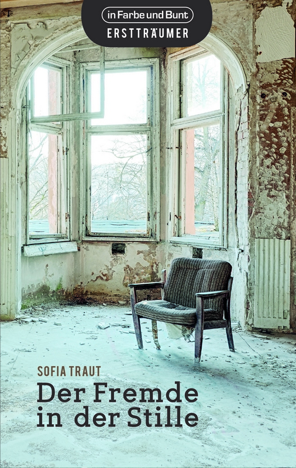

© in Farbe und Bunt Verlag
Sofia Traut ist ein wahres Multitalent. Geboren 1983, studierte sie Anglistik, Biologie, Geschichte und Literaturwissenschaft, spielt wie ihre Romanfigur selbst leidenschaftlich gerne Cello und lässt sich auch beim Schreiben von der Musik inspirieren. Sie lebt, schreibt und arbeitet in Bielefeld.
»Eigentlich hat die begnadete Musikstudentin und Pianistin Matilda alles, was man sich wünschen kann. Doch von ihrem Waschzwang, ihren Angststörungen und ihrer schwer depressiven Mutter weiß niemand. Nach einem Auslandsaufenthalt bezieht Matilda in Dresden die Wohnung ihrer Urgroßmutter und beschwört damit buchstäblich die Geister der Vergangenheit herauf. Als der attraktive Cellist Richard immer wieder wie aus dem Nichts in ihrem Wohnzimmer auftaucht, glaubt Matilda zunächst, den Verstand zu verlieren. Doch dann setzt sich Stück für Stück Matildas Familiengeschichte zusammen, an deren Anfang eine geheimnisvolle Tragödie steht, in die Richard auf tragische Weise verwickelt ist.«
Der Roman ist ca. 370 Seiten lang (E-Reader, vom Gerät abhängig) und bereits vorzubestellen.
Titel: Der Fremde in der Stille
Autor: Sofia Traut
Preis E-Book: 7,49 EUR (E-Book)
Erscheinungstermin: 15. Mai 2015 (E-Book)
Seitenzahl: ca. 370
ISBN E-Book: 978-3-941864-33-7
Genre: Urban Fantasy